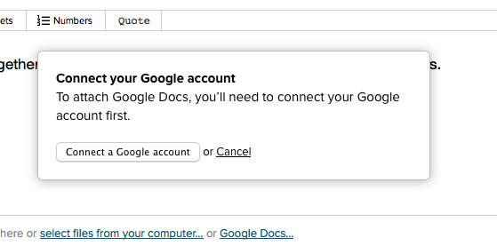

The Google Docs integration lets you attach your Google Documents, Spreadsheets, Presentations, Forms, and Drawings to a Basecamp project. When you attach a Google Doc to a Basecamp project, you can view it like any other file. You can even preview most Google Docs without leaving Basecamp.
Some information about permissions...
Before you get started, here are a few tips for getting the most out of the Google Docs integration!
To access a Google Doc from Basecamp, people will need to have permission to view it. Permissions are set within your Google account. Basecamp won't change them.
You need a Google address to share and view Google Docs on Basecamp. That can be a 'gmail.com' address, or it can be a work email, if your company uses Google Apps. Get in touch with your email administrator to see if you're using Google Apps for email.
For teams using Google Apps for email, the Google Docs integration works best when you're automatically sharing your files with everyone on your team. Here's how your admin can set those permissions. Note that this setting grants read-only access. To let people edit a Google Doc, you'll need to set that permission for them. You'll also need to grant access to your clients, or anyone else who's not a member of your Google Apps account.
If you're using Google Docs through your individual 'gmail.com' address, you'll need to set permissions on each file individually through Google Drive. Here's how.
Folks who don't have access to a Google file can request access from Basecamp. That request is emailed to the Google Doc's owner for approval.
Keep in mind that removing someone from your Basecamp account does not revoke access to that Google Doc.
Set it up
In the file upload menu, click "Google Docs".
You'll see a menu that lets you connect to a Google account.

Sign into your account, and authorize Basecamp's access.
You'll need to authorize access if you use a new browser, or a different computer, if you switch Google accounts, or if you sign out of Google.
Attach your Google Docs
Once that's set up, you'll see a menu with all your Google Docs. You'll only be able to attach Documents, Spreadsheets, Presentations, Forms, and Drawings to a Basecamp project. Other files added to your Google Drive won't be visible.
Google Docs work just like other files. You can add them to discussions, comments, or attach them on their own. They can be part of active projects and templates. Delete a file if you don't need it anymore. Deleting Google Docs from Basecamp doesn't remove the file from your Google Drive account. Google Docs don't count against your Basecamp storage limit.
Viewing Google Docs
When you have permission to access a Doc, and you're signed into your Google account, you'll see a read-only preview of your Google Docs.
Need to make some edits? Click "Open on Google Drive".
If you're not signed in, click on the file icon, or click "Sign into Google".
If you need access to a Google Doc, click 'Request access'. Google will send an email to the Doc's creator, asking them to grant you permission.